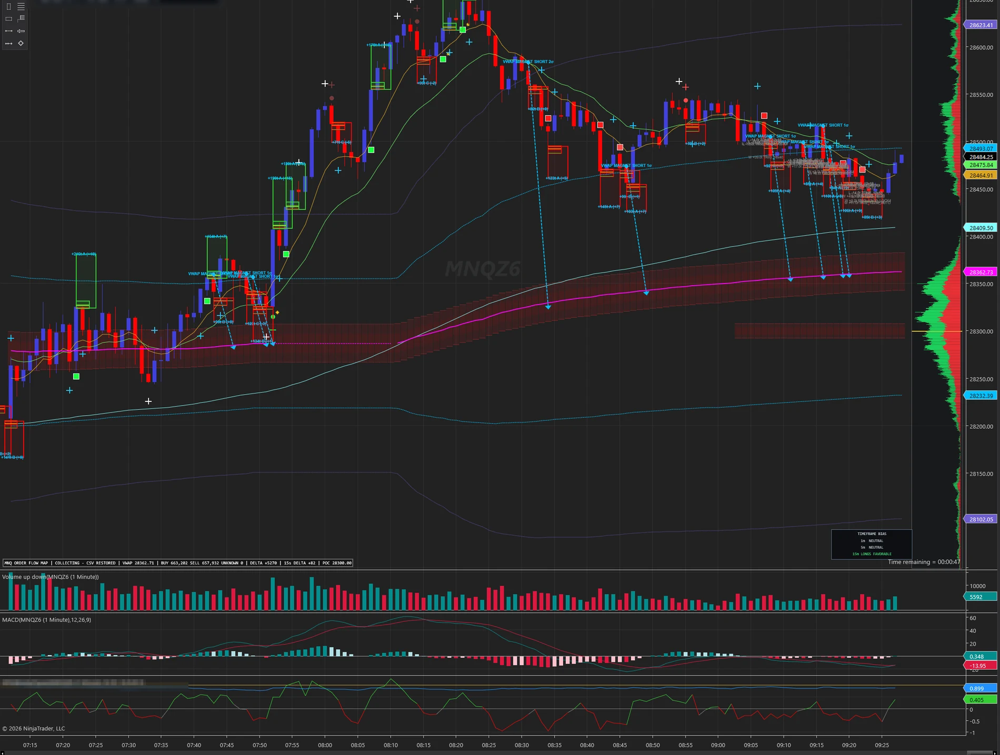
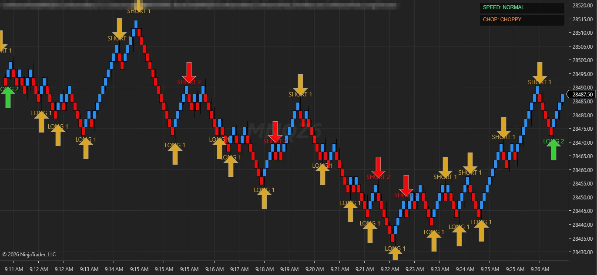
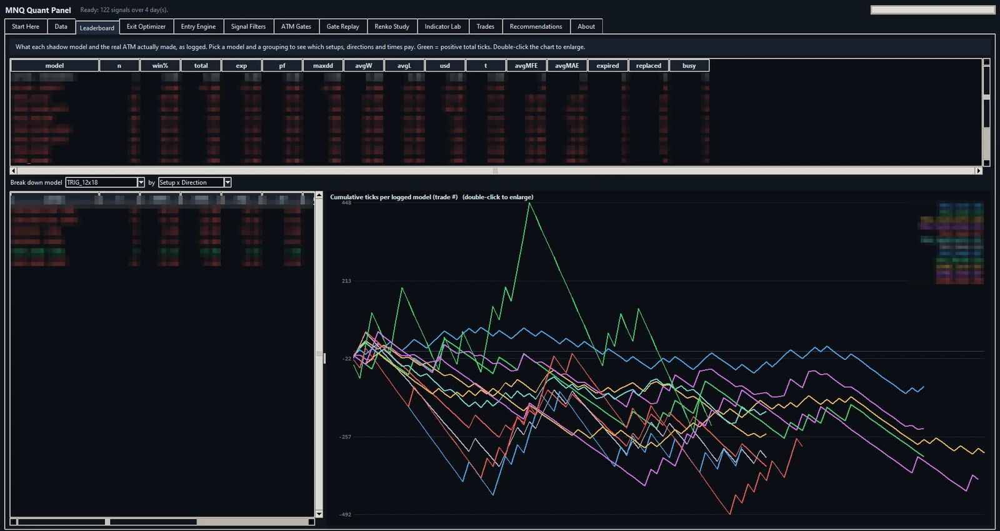
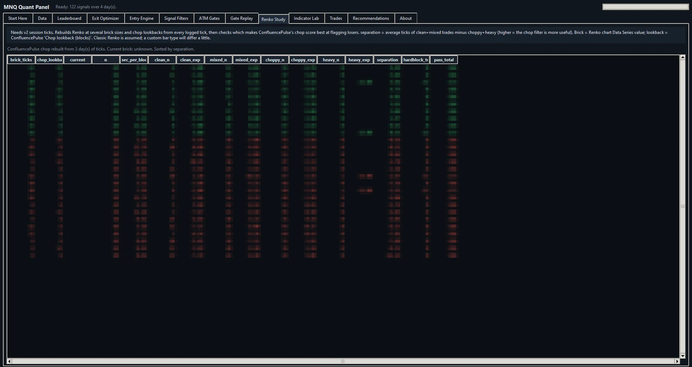
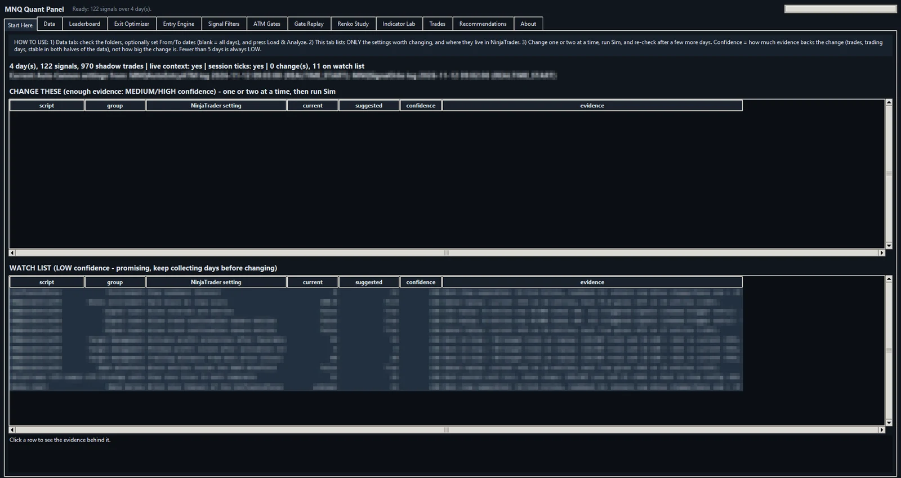
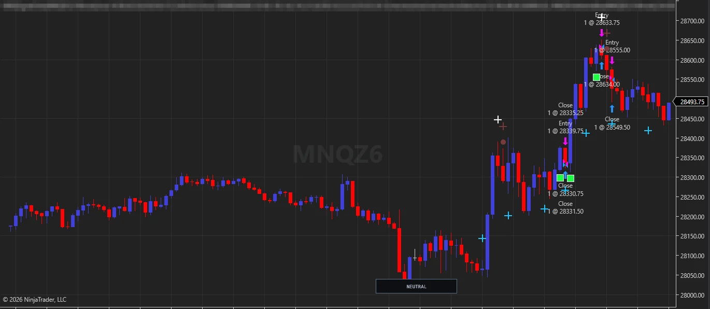

An MNQ futures research and execution stack for NinjaTrader 8. Every signal is traded many ways in the shadows, every tick is logged, and no setting changes until it has proven itself on days it never saw.

The 1-minute MNQ chart during a session: signals, VWAP bands and magnet shots, the order-flow profile on the right, and the VWAP / POC "minefield" shaded behind the candles.
How it fits together
A handful of custom NinjaScripts talk to each other in memory while the market is open. Nothing leaves the machine; everything lands in plain CSV files for the analysis afterwards.
Signals 1-minute signal engine ──┐
Order flow tape pressure, VWAP, zones ├──► Auto Cannon (ATM entries, score gates, smart exit)
Environment Renko speed and chop ─────┘ │
▼
Shadow trader logs every signal many ways ──► CSV: events · bars · tick paths · session ticks
│
Quant panel replays, ranks, recommends ◄───────┘

The environment chart
Custom Renko bars rebuilt from every trade print.
ConfluencePulse reads speed and chop from the bricks and publishes them live.
Chop matters. The same signal behaves very differently in a clean trend and in a grind; the strategy knows which one it is in.
The brick size and lookback are not guesses: the panel rebuilds the Renko chart from logged ticks at many sizes and picks the one that best separates winners from losers.
The shadow trader
The idea that makes the rest possible. A live strategy only learns from the trades it takes. The shadow trader learns from every signal, whether we traded it or not.

Every signal, many trades. Each signal opens a family of hypothetical trades: different entries, stops, targets and trailing exits, all at once.
No orders. Nothing is sent to the broker. The trades exist only in the log.
Tick by tick. Every print is recorded while any shadow trade is open, so each one can later be replayed exactly.
Context at the moment of entry: VWAP position, tape pressure, Renko state and more, stored next to each trade.
Real trades too. The live strategy's fills are logged alongside, so model and reality can be compared.
Each line is one shadow model's running total across the same signals. Names and numbers are hidden on purpose.
The quant panel
A desktop app that reads every log and asks one question over and over: what would have happened if we had traded differently?
Tick-exact replays. Stops, targets and trailing exits are replayed on the logged tick paths, not on bar approximations.
Proven on every load. A self-test re-runs the logged shadow trades and must match them exactly before anything is shown.
Equity curves, not totals. A good exit rises smoothly and wins in both halves of the data. One lucky trade doesn't count.
The real engine, ported. Entry rules and score gates are reproduced from the strategy, so "what if" means what the strategy would really have done.

Every indicator is a hypothesis
Indicator Lab re-runs the signal engine on logged data with one setting changed at a time, and first proves it reproduces the live signals exactly.
Gate Replay scores each signal at the moment it fired and shows which filters saved money and which only got in the way.
Renko Study rebuilds the environment chart at many brick sizes from raw ticks.
Walking forward
The easiest way to fool yourself in trading is to tune settings on the same days you then judge them on. The process below is the guard rail.
01 · COLLECT
Log, don't touch
Run a block of sessions with settings frozen. The shadow trader records everything.
02 · DECIDE
Change one or two things
Only changes with enough evidence, that win in both halves of the data, by a material margin.
03 · PROVE
Judge on unseen days
Run the next block with the new settings and judge them only on days that played no part in choosing them.
04 · REPEAT
Keep or roll back
If it still wins out of sample, it stays. If not, it goes. Then the next block begins.

Start Here lists only the changes with enough evidence, and a watch list of promising ones that need more days. Confidence is capped by the number of days logged, however good a result looks.

Safety first
One exit button. A safe exit closes through the strategy, never through a race with the chart's own buttons.
Never naked. If a protective stop is rejected or cancelled while a position is still open, the strategy flattens on its own.
No stray hot keys. Nothing on the keyboard can open a trade.
Sim first. Every change runs in simulation before it touches a live account.
What isn't here
The source code, the thresholds, the gate logic and the exits we actually trade stay private. The screenshots are real; the numbers in them are hidden on purpose.
Research software, not financial advice. Futures trading carries substantial risk of loss. Past results, real or simulated, do not predict future results.